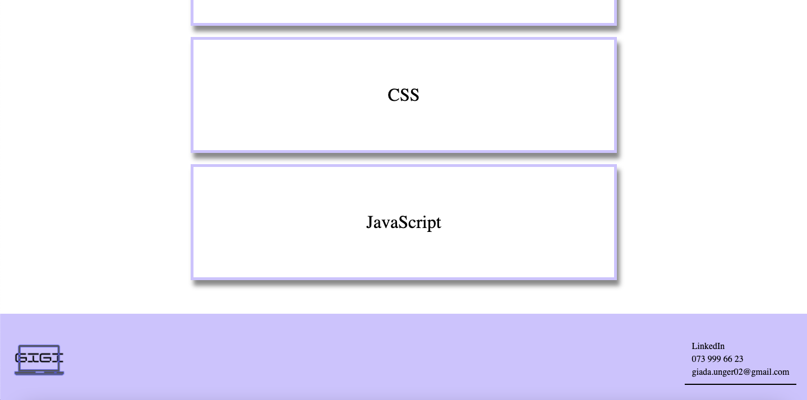
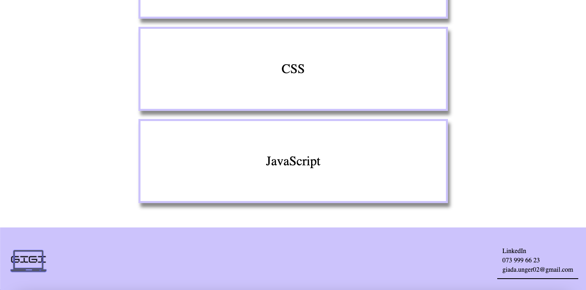

Back
Back
My second portfolio
 


This was my second attempt on making a portfolio. It is kind of similar to my first portfolio but with
a different color scheme. There was much to improve art much that didn’t work. I wasn’t content with
the result so far, so I started over. But this time I took inspiration from other creator’s portfolios,
to get a clear picture on what design and color schemes I wanted. The portfolios o took inspiration
from was Oluwakemi Adeleke and Gift Egwuenu . The goal with this portfolio was to make it look more professional and implement
JavaScript